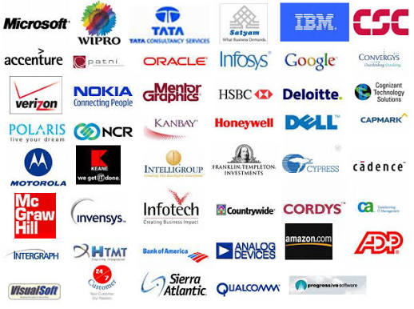
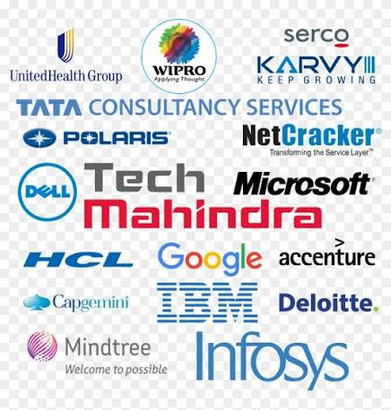

An IT (Information Technology) company provides the digital backbone for businesses by managing networks, data storage, and cybersecurity. These firms build software, offer cloud solutions, and provide technical support to help organizations operate efficiently. It provides technology-related services and solutions, such as software development, network management, cybersecurity, and cloud computing. They act as the tech backbone for other businesses, helping them store, retrieve, and secure digital information efficiently

Chennai is a major global IT hub, home to major IT services firms like Tata Consultancy Services (TCS), Cognizant, and Infosys. Local IT firms range from massive global enterprises with campuses in areas like SIPCOT IT Park and Sholinganallur to specialized software development agencies.
Hyderabad is one of India's premier technology hubs, anchored by major IT/software parks in HITECH City, Gachibowli, and Madhapur. The city’s dynamic ecosystem is driven by global tech giants, multinational consulting firms, and rapidly expanding homegrown companies. Leading global IT services and consulting companies have established massive delivery and innovation centers across the city, providing digital transformation services globally.
Bangalore’s top IT companies are divided into mass-hiring service giants and lucrative product/GCC firms. The best choice depends on whether you value structured entry-level training or higher compensation.
About Company

An IT (Information Technology) company provides technology-based services and products to help businesses manage data, secure networks, and streamline operations. These firms specialize in areas like custom software development, cloud computing, cybersecurity, and IT consulting, acting as the backbone for modern digital infrastructure.
In your local area of Chennai, the IT sector is a massive hub. Prominent global and local tech companies, such as Tata Consultancy Services (TCS), Cognizant, Infosys, and Mphasis, operate large development centers here. These organizations serve global clients by modernizing their enterprise infrastructure and offering managed IT services.
Content
Careers & Offices: They have a massive footprint in Chennai with multiple campuses (e.g., in Sholinganallur, MEPZ, and DLF IT Park) employing thousands of tech professionals. You can explore openings and job culture on the Cognizant Careers portal.
Corporate Profile: The company trades on the NASDAQ under the ticker CTSH and focuses heavily on bridging the gap between AI investments and tangible enterprise value
Business Services: They offer consulting, IoT, digital engineering, and intelligent process automation across industries like healthcare, banking, and retail.